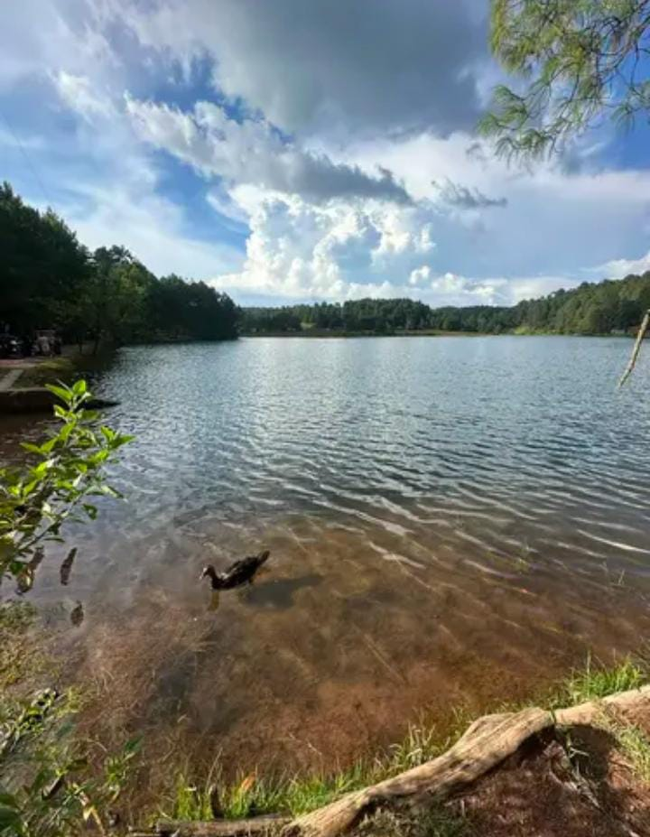

"La Laguna Negra (también conocida como el Circuito Laguna Negra) es un pequeño y apacible cuerpo de agua rodeado de naturaleza, ubicado en los alrededores de Valle de Bravo y cerca del municipio de Zacazonapan en el Estado de México.
Características del lugar:
• Origen del nombre: Recibe su nombre porque la sombra de los árboles de pino y encino proyectada sobre el agua le da un aspecto bello y misterioso.
• Entorno natural: Está rodeada de un denso bosque de montaña con helechos, musgos y líquenes. En la zona es común ver ardillas grises, escuchar aves como el carpintero de bellota y apreciar los reflejos del follaje en el agua.
• Acceso: La entrada a la vereda y al circuito es libre y gratuita.
Actividades y rutas de senderismo Es un sitio muy visitado para el ecoturismo y el deporte al aire libre:
• Circuito Laguna Negra: Un sendero que rodea la laguna, ideal para caminar o disfrutar del bosque.
• Senderismo y BTT (Ciclismo de montaña): Existen rutas populares como el recorrido Laguna Negra - Los Pozos, el cual tiene una distancia aproximada de 12.7 km, una dificultad moderada y un tiempo estimado de 3 horas y media, disponible para consulta en AllTrails.
• Recomendaciones: El terreno consta de senderos de tierra, hojarasca, raíces y piedras con pendientes moderadas. En época de lluvias las orillas suelen ser muy húmedas y resbaladizas, por lo que se recomienda usar calzado cerrado con buen agarre y llevar agua."
Desde el centro de Valle de Bravo son 20 a 30 minutos en coche hacia Zacazonapan, el camino es de terracería, no hay transporte directo, es mejor ir en coche o con guía. La entrada es libre, lo mejor es ir temprano de 8 a 10 de la mañana porque hay menos gente y la luz está más bonita. No hay baños ni tiendas cerca.